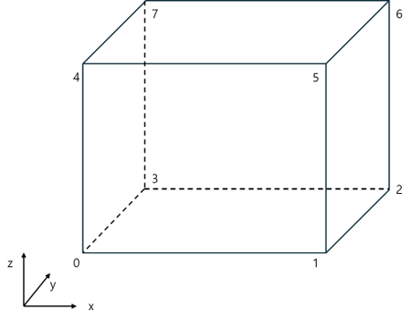
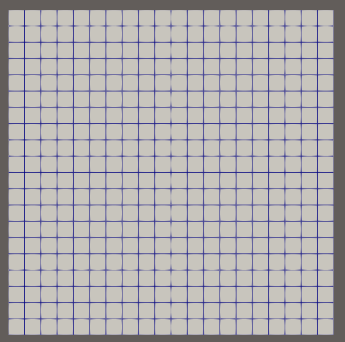

🧩 blockMesh
blockMesh란?
이번 시간에는 OpenFOAM의 격자 유틸리티 중 가장 기본적인 유틸리티인 blockMesh에 대해 알아볼 예정이다.
CFD 해석에서 격자는 해석 정확도와 연산 효율을 결정하는 핵심 요소이다.
OpenFOAM은 blockMesh, snappyHexMesh와 같은 격자 생성 유틸리티를 가지고 있다.
이 때, blockMesh는 정육면체 정렬 격자 (Structure Mesh) 생성을 지원하고 단순한 형상에서 빠른 격자 생성을 지원한다.
하지만 형상이 조금만 복잡해져도 사실상 격자를 생성하기 어렵다는 치명적인 단점**을 가지고 있다.
그래서 OpenFOAM은 복잡한 형상에서 격자 생성을 위한 **snappyHexMesh 유틸리티를 제공하고 있다. 이 유틸리티에 대해서는 다음 시간에 알아보도록 하자.
blockMeshDict
blockMesh를 만들기 위해서는 blockMeshDict를 생성해야 한다.
blockMeshDict를 system 폴더 밑에 위치하며, 내용은 아래와 같다.
참고로 아래 blockMeshDict는 OpenFOAM-V2412의 icoFoam에 있는 cavity라는 예제의 blockMeshDict이다.
/*--------------------------------*- C++ -*----------------------------------*\
| ========= | |
| \\ / F ield | OpenFOAM: The Open Source CFD Toolbox |
| \\ / O peration | Version: v2412 |
| \\ / A nd | Website: www.openfoam.com |
| \\/ M anipulation | |
\*---------------------------------------------------------------------------*/
FoamFile
{
version 2.0;
format ascii;
class dictionary;
object blockMeshDict;
}
// * * * * * * * * * * * * * * * * * * * * * * * * * * * * * * * * * * * * * //
scale 0.1;
vertices
(
(0 0 0) //vertex number 0
(1 0 0) //vertex number 1
(1 1 0) //vertex number 2
(0 1 0) //vertex number 3
(0 0 0.1) //vertex number 4
(1 0 0.1) //vertex number 5
(1 1 0.1) //vertex number 6
(0 1 0.1) //vertex number 7
);
blocks
(
hex (0 1 2 3 4 5 6 7) (20 20 1) simpleGrading (1 1 1)
);
edges
(
);
boundary
(
movingWall
{
type wall;
faces
(
(3 7 6 2)
);
}
fixedWalls
{
type wall;
faces
(
(0 4 7 3)
(2 6 5 1)
(1 5 4 0)
);
}
frontAndBack
{
type empty;
faces
(
(0 3 2 1)
(4 5 6 7)
);
}
);
// ************************************************************************* //
blockMeshDict 구조 (헤더)
/*--------------------------------*- C++ -*----------------------------------*\
| ========= | |
| \\ / F ield | OpenFOAM: The Open Source CFD Toolbox |
| \\ / O peration | Version: v2412 |
| \\ / A nd | Website: www.openfoam.com |
| \\/ M anipulation | |
\*---------------------------------------------------------------------------*/
FoamFile
{
version 2.0;
format ascii;
class dictionary;
object blockMeshDict;
}
// * * * * * * * * * * * * * * * * * * * * * * * * * * * * * * * * * * * * * //
blockMeshDict 구조 (scale & vertices)
scale 0.1;
vertices
(
(0 0 0)
(1 0 0)
(1 1 0)
(0 1 0)
(0 0 0.1)
(1 0 0.1)
(1 1 0.1)
(0 1 0.1)
);
| 키워드 | 설명 | 예시 |
|---|---|---|
| scale | 격자의 크기 (scale)을 지정해주는 요소(factor)이다. | 0.001은 mm 단위로 변환해준다. (OpenFOAM의 길이 기본 단위는 m이다.) |
| vertices | 점 (vertex)들의 집합(List)이다. | (0 0 0) |
즉, 위 내용은 0.1로 scale을 진행하며 (0, 0, 0)부터 (0, 1, 0.1) 총 8개의 점들로 blockMesh를 생성한다는 의미이다.
이 때, 맨 위에서부터 차례대로 vertex 0번부터 7번까지 총 8개의 vertex로 이루어져 있다. (아래 그림을 참고하면 된다.)

blockMeshDict 구조 (blocks)
blocks
(
hex (0 1 2 3 4 5 6 7) (20 20 1) simpleGrading (1 1 1)
);
block 정의는 blocks이라는 이름의 목록에 포함된다.
이 때, vertice들의 목록 (번호), 각 방향 별 격자 수, 각 방향의 셀 비율을 나타내는 목록으로 구성된다.

blockMeshDict 구조 (boundary)
boundary
(
movingWall
{
type wall;
faces
(
(3 7 6 2)
);
}
fixedWalls
{
type wall;
faces
(
(0 4 7 3)
(2 6 5 1)
(1 5 4 0)
);
}
frontAndBack
{
type empty;
faces
(
(0 3 2 1)
(4 5 6 7)
);
}
)
마지막으로 boundary들이다.
boundary들은 vertice들의 조합으로 vertice 4개를 조합시켜 하나의 사각형 형태 혹은 3개를 조합시켜 삼각형 형태로 경계면을 정의할 수 있다.
대표적으로 movingWall이라는 경계면은 vertice 3, 7, 6, 2번을 조합하였다.
blockMesh 생성
blockMesh 생성 방법은 간단하다.
Working directory에서 blockMesh 명령어를 입력하면 격자가 자동으로 생성된다.
blockMesh
그러면 아래와 같이 로그가 나오면서, 격자 생성이 완료된다.
kdg@LAPTOP-0HV9Q2LJ:~/OpenFOAM/kdg-v2412/run/cavity$ blockMesh
/*---------------------------------------------------------------------------*\
| ========= | |
| \\ / F ield | OpenFOAM: The Open Source CFD Toolbox |
| \\ / O peration | Version: 2412 |
| \\ / A nd | Website: www.openfoam.com |
| \\/ M anipulation | |
\*---------------------------------------------------------------------------*/
Build : _8dbc61e11c-20241220 OPENFOAM=2412 version=v2412
Arch : "LSB;label=32;scalar=64"
Exec : blockMesh
Date : Jul 29 2025
Time : 19:30:09
Host : LAPTOP-0HV9Q2LJ
PID : 977
I/O : uncollated
Case : /home/kdg/OpenFOAM/kdg-v2412/run/cavity
nProcs : 1
trapFpe: Floating point exception trapping enabled (FOAM_SIGFPE).
fileModificationChecking : Monitoring run-time modified files using timeStampMaster (fileModificationSkew 5, maxFileModificationPolls 20)
allowSystemOperations : Allowing user-supplied system call operations
// * * * * * * * * * * * * * * * * * * * * * * * * * * * * * * * * * * * * * //
Create time
Creating block mesh from "system/blockMeshDict"
Creating block edges
No non-planar block faces defined
Creating topology blocks
Creating topology patches - from boundary section
Creating block mesh topology - scaling/transform applied later
Check topology
Basic statistics
Number of internal faces : 0
Number of boundary faces : 6
Number of defined boundary faces : 6
Number of undefined boundary faces : 0
Checking patch -> block consistency
Creating block offsets
Creating merge list (topological search)...
Deleting polyMesh directory "constant/polyMesh"
Creating polyMesh from blockMesh
Creating patches
Creating cells
Creating points with scale (0.1 0.1 0.1)
Block 0 cell size :
i : 0.005 .. 0.005
j : 0.005 .. 0.005
k : 0.01 .. 0.01
No patch pairs to merge
Writing polyMesh with 0 cellZones
----------------
Mesh Information
----------------
boundingBox: (0 0 0) (0.1 0.1 0.01)
nPoints: 882
nCells: 400
nFaces: 1640
nInternalFaces: 760
----------------
Patches
----------------
patch 0 (start: 760 size: 20) name: movingWall
patch 1 (start: 780 size: 60) name: fixedWalls
patch 2 (start: 840 size: 800) name: frontAndBack
End
그러면 아래와 같이 격자가 생성된 것을 확인할 수 있다.
